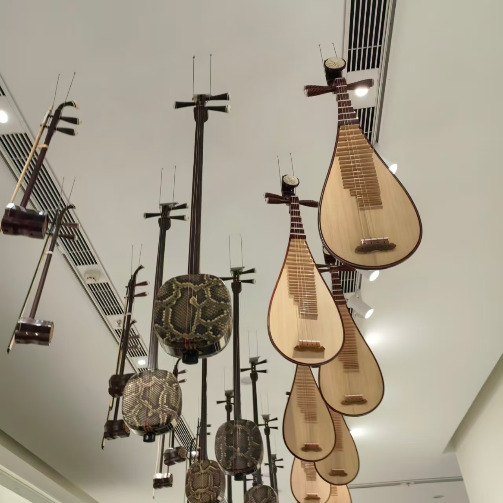

传统曲艺
说唱间的中国智慧 · 国家级非物质文化遗产

一、技艺简介
曲艺是中华民族各种"说唱艺术"的统称，是以口语说唱故事、塑造人物、表达情感的传统艺术形式。曲艺历史悠久、种类繁多，全国有400多个曲种，是中华优秀传统文化的重要组成部分。曲艺以"说、学、逗、唱"为主要艺术手段，表演形式灵活多样，深受广大人民群众喜爱。
曲艺艺术的最大特点是"一人多角"和"以说代唱"。曲艺演员通过声音的变化、表情的转换和身段的运用，塑造出性格各异、形象鲜明的人物。曲艺的表演语言生动活泼、通俗易懂，具有强烈的感染力和亲和力。曲艺是中华民族集体智慧的结晶，承载着丰富的历史文化信息和民间记忆。
二、历史渊源
曲艺艺术源远流长，最早可追溯至先秦时期的"俳优"表演。俳优以诙谐幽默的语言和表演取悦君王，是中国早期曲艺的雏形。唐宋时期，说话、弹词等曲艺形式开始盛行，出现了职业说书人。明清时期，曲艺进入鼎盛阶段，形成了苏州评弹、相声、快板、京韵大鼓等众多曲种，各具特色、百花齐放。
2008年，苏州评弹、相声、京韵大鼓等多个曲艺项目被列入国家级非物质文化遗产名录。曲艺艺术的保护与传承受到高度重视，各地纷纷举办曲艺进校园、进社区等活动，让这一古老的艺术形式焕发出新的生机。
三、主要曲种
- 苏州评弹：流行于江南地区，吴语演唱，说噱弹唱，被誉为"中国最美的声音"，是江南文化的代表性曲种
- 相声：流行于京津冀地区，以说、学、逗、唱为主要手段，语言幽默风趣，深受全国观众喜爱
- 京韵大鼓：流行于京津冀地区，以鼓板伴奏，唱腔苍劲有力，韵味醇厚
- 快板：流行于全国各地，以竹板击节，朗朗上口，节奏明快
- 河南坠子：流行于中原地区，以坠琴伴奏，唱腔质朴醇厚，乡土气息浓郁
- 山东快书：流行于山东地区，以铜板击节，语言生动幽默
- 单弦：流行于北京地区，以八角鼓伴奏，唱腔婉转悠扬
四、表演形式
- 单口：一人表演，独自说唱，考验演员的功底和魅力
- 对口：两人表演，一捧一逗，配合默契，相声中最为常见
- 群口：多人表演，各司其职，热闹非凡
- 坐唱：坐着演唱，以唱为主，评弹、京韵大鼓多采用此形式
- 走唱：边走边唱，载歌载舞，形式活泼
五、艺术特色
- 说：语言生动、刻画人物入木三分，是曲艺的核心手段
- 学：模仿各种声音、方言、神态，惟妙惟肖
- 逗：幽默风趣、妙趣横生，引人入胜
- 唱：唱腔优美、声情并茂，韵味悠长
- 演：一人多角、形神兼备，展现高超的表演技巧
六、文化意义
- 历史传承：曲艺承载着丰富的历史信息和民间记忆，是研究社会历史的活化石
- 语言艺术：曲艺是民族语言艺术的精华，展现了汉语的魅力和智慧
- 社会教化：曲艺寓教于乐，传递着传统美德和人生哲理
- 文化认同：曲艺是地域文化的重要标识，增强着民族和地域的文化认同
"说书唱戏劝人方，三条大路走中央。曲艺之美，在于一方舞台上的千军万马，在于一人之口中的悲欢离合。"